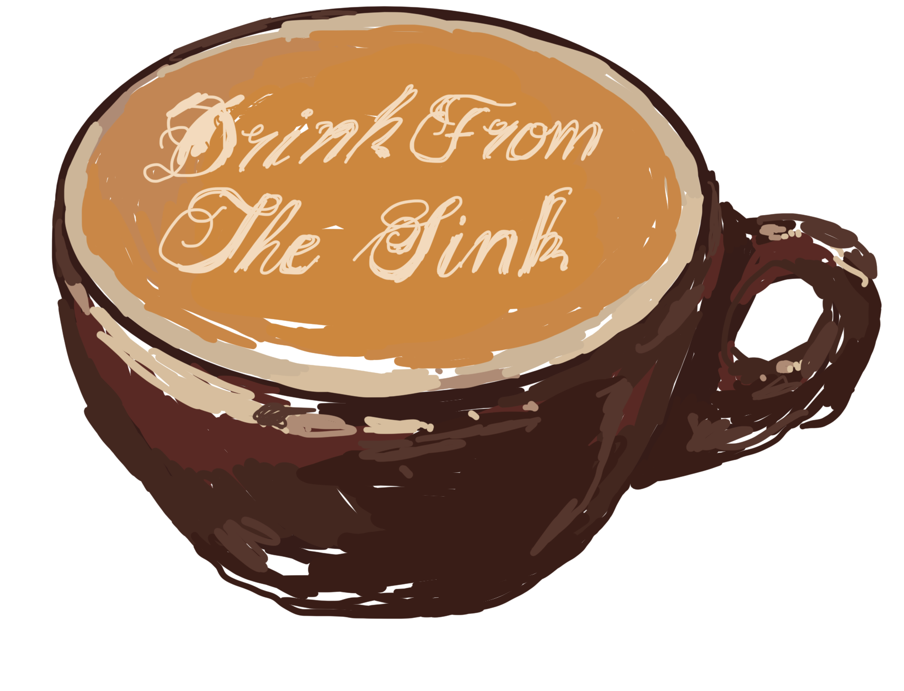

We operate on the second floor of the Mayer Campus Center
on Tufts University Medford Campus.
STUDENT RUN COFFEESHOP
The Sink Cafe is an entirely student-run operation on Tufts University, sponsored by the Office for Campus Life. We rely on our own management and funding to provide a space for community, fun, and (of course) caffeine. Initially founded in a dorm basement as “The Rez,” we now operate on the second floor of the Mayer Campus Center in the space we lovingly call “The Sink.” We love to collaborate with other student-run clubs, and offer a variety of classic and specialty coffee and tea drinks seven days a week. Come by and see us today!
